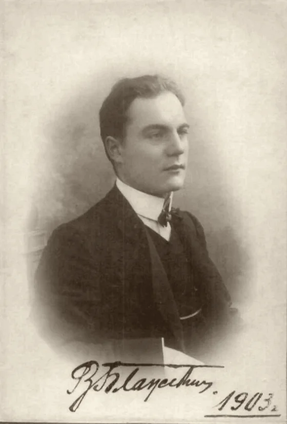

Очерк без отдельной датировки
Вариант английского раздела школы: нет пустой колонки под отсутствующую дату.
Serve the repository root and open this file at desktop and mobile widths. Run await runEditorialTests() after resizing.
Вариант английского раздела школы: нет пустой колонки под отсутствующую дату.
Проверка ширины читательской колонки без пустого места под отсутствующую фотографию. Текст должен использовать доступную область, сохраняя ограничитель длины строки.
Следующий абзац проверяет спокойный вертикальный ритм повествования.
Фотография остаётся отдельной колонкой на широком экране и следует за текстом на телефоне.

Вложенный материал не должен повторно сжимать читательскую колонку.
Проверка вложенной структуры, используемой в разделе школы и традиции.